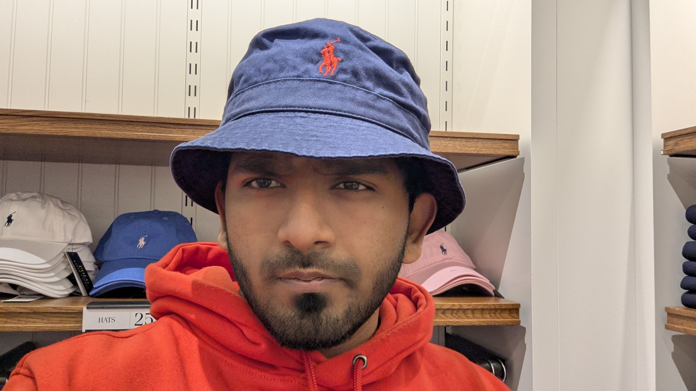

About Me

I am an Industrial Engineering graduate student with a strong background in quality control, process optimization, and attention to detail. My mechanical engineering foundation combined with my experience in quality assurance has given me a unique perspective on evaluating visual aesthetics and technical accuracy.
My expertise in quality management systems, root cause analysis, and defect identification makes me an ideal candidate for creative evaluation roles that require critical thinking and analytical skills. I've spent years developing my eye for detail through rigorous quality inspection processes and lean manufacturing improvements.
Currently pursuing my MS in Industrial Engineering at Northeastern University, I'm passionate about applying my technical expertise to the creative sector, particularly in AI-driven content evaluation and quality assurance.
My Evaluation Process
When approaching creative evaluation, I follow a structured methodology that combines technical assessment with aesthetic appreciation:
Analysis of Requirements
I begin by thoroughly understanding the prompt specifications and project requirements, establishing clear evaluation criteria.
Technical Assessment
Using tools like Adobe Creative Suite, I analyze composition, color accuracy, lighting, and technical execution against established benchmarks.
Aesthetic Evaluation
I assess creative elements like style consistency, artistic interpretation, and visual impact while maintaining objectivity.
Detailed Feedback
I provide structured, actionable feedback with clear documentation of strengths, weaknesses, and specific improvement suggestions.
Skills
Creative & Technical Tools
- Adobe Creative Suite (Photoshop, Illustrator, Premiere)
- Visual Analysis & Composition Assessment
- Color Theory & Lighting Evaluation
- Technical Drawing & CAD Proficiency
- Minitab & Statistical Analysis
Quality Assessment
- Quality Management Systems (QMS)
- Root Cause Analysis (RCA)
- Failure Mode and Effects Analysis (FMEA)
- Statistical Quality Control (SQC)
- Six Sigma Methodologies (Green Belt Certified)
Process Improvement
- Visual Stream Mapping (VSM)
- Time-Motion Studies
- Process Optimization Techniques
- Corrective and Preventive Action (CAPA)
- 5S Methodology & Lean Principles
Portfolio

Visual Quality Control Dashboard
Designed and implemented a visual quality control dashboard for tracking defects and quality metrics in manufacturing processes. This project involved visual data representation and user experience design.

Manufacturing Process Flow Visualization
Created detailed visual representations of automotive assembly processes, highlighting bottlenecks and optimization opportunities through engaging visual storytelling.
Visual Defect Analysis System
Developed a visual cataloging system for manufacturing defects, creating detailed documentation with visual examples and classification criteria for training and quality control purposes.

Al-Si Composite Material Visual Documentation
Created comprehensive visual documentation for Al-Si metal matrix composites research, including microscopy imagery analysis and property characterization visuals.
Relevant Experience
- Conducted detailed visual inspections of hydraulic components against stringent quality standards
- Implemented visual quality control metrics, improving defect identification accuracy by 20%
- Performed failure mode analysis with visual documentation of potential defects
- Created standardized visual inspection guides for quality assurance team
- Executed 2500+ visual inspections on steel tubes with 99.5% accuracy rate
- Managed quality audits achieving exceptional defect identification (0.5 PPM rate)
- Standardized component dimensions documentation for improved visual reference
- Maintained detailed visual records for quality assurance and compliance purposes
- Utilized statistical tools to analyze performance indicators and present data visually
- Conducted detailed defect analysis with visual documentation
- Developed standardized calibration documentation with visual aids
- Improved infrared sensor calibration accuracy through visual alignment techniques
Education & Certification
Relevant Coursework: Intelligent Manufacturing, Lean Concepts, Operations Research, Supply Chain Engineering
Relevant Coursework: Quality Control, Industrial Management, Process Optimization, Systems and Operations
Contact Me
I'm currently seeking opportunities as a Creative Evaluator where I can apply my quality assurance expertise and attention to detail to AI-generated content evaluation. Please feel free to reach out via email or phone to discuss how my skills align with your requirements.
Phone: 617-448-5093
Email: subramaniamravicha.j@northeastern.edu
LinkedIn: LinkedIn Profile
Availability: Immediately available for part-time remote positions